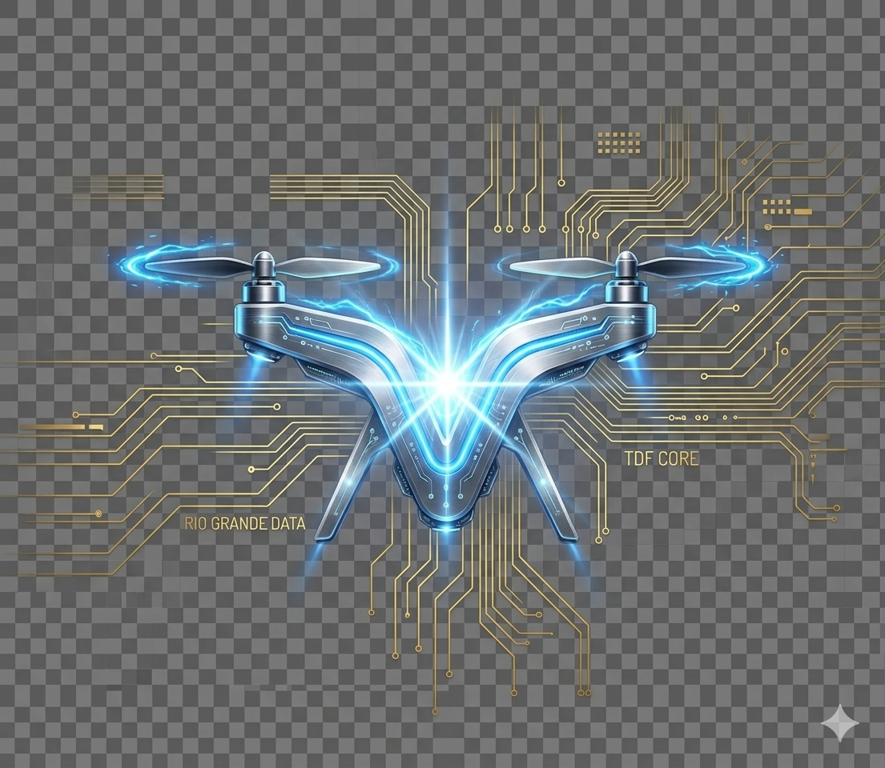
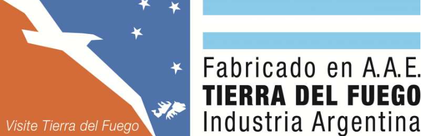
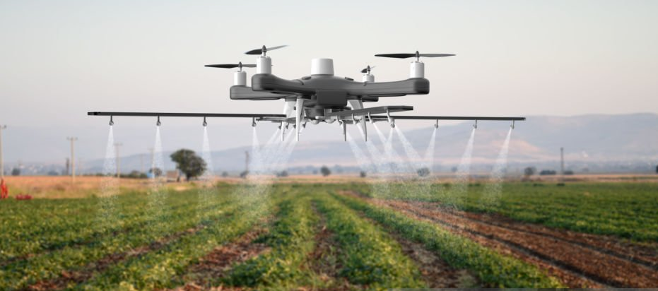
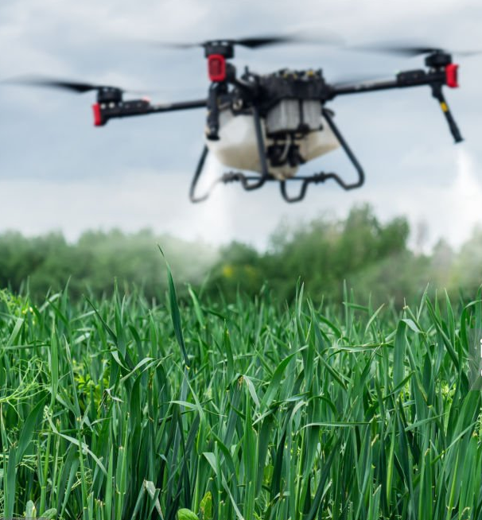
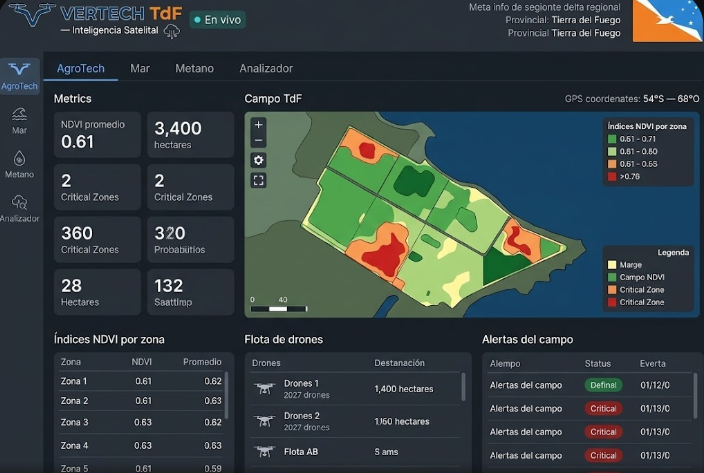

VertechTdF
Tierra del Fuego · Ley 19.640 · AgroTech & Cloud ComputingInfraestructura soberana de datos y automatización agroindustrial desde el Área Aduanera Especial de Río Grande — con retorno proyectado del 24% TIR y payback a 18 meses.
Estructura operativa para la fabricación de hardware y la arquitectura de servicios Cloud de alto valor.



Indicadores financieros bajo escenario conservador con beneficios del Área Aduanera Especial de TDF.
Argentina genera el 65% de sus divisas en el agro pero opera sin soberanía tecnológica. Vertech TdF cierra esa brecha desde el sur.
Sin procesamiento local de datos climáticos y edáficos en tiempo real para optimizar rendimientos agrarios en entornos controlados.
Ausencia de Data Centers locales que capitalicen el clima austral para eliminar costos de refrigeración y ofrecer baja latencia.
Hardware tecnológico importado a alto costo. El régimen CKD bajo Ley 19.640 cambia la ecuación: 0% arancel, ensamblado local.
Cada capa genera ingresos independientes y se potencia con las otras. La capa SaaS es el activo de mayor margen y escalabilidad.
Datos NDVI, mapas de rendimiento e IA agronómica como servicio. Margen bruto +70%. Modelo de suscripción recurrente B2B.
Mayor margen · EscalableFree-cooling natural. PUE óptimo. -45% en costos operativos vs centros convencionales. Procesamiento soberano bajo Ley 19.640.
Infraestructura · EficienciaManufactura local bajo régimen TDF. 0% arancel en componentes importados. Flota propia + ventas a terceros del sector agro.
Hardware · CKD · 0% arancelFlujo secuencial de ensamblado, testeo y validación bajo Ley 19.640. 0% arancel en componentes importados.
Red de actores estratégicos que validan y potencian el modelo desde lo académico, tecnológico e institucional.
Abierto a inversores, alianzas institucionales y colaboración técnica. Tierra del Fuego como plataforma de innovación soberana.
Alianzas de gran escala, rondas de inversión y vinculación institucional.
Contactar FundadorArquitectura de Data Centers, flujos CKD y optimización analítica.
Contactar Ingeniería